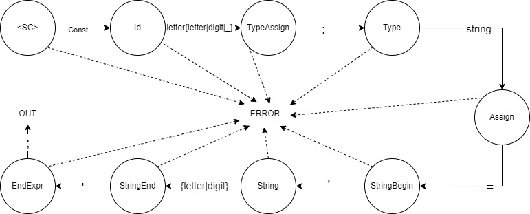

Грамматика G[‹SC›] является автоматной.
Правила (1) – (10) для G[‹SC›] реализованы на графе (см. рисунок 1).
Сплошные стрелки на графе характеризуют синтаксически верный разбор; пунктирные символизируют состояние ошибки (ERROR);
Состояние OUT символизирует успешное завершение разбора.
Рисунок 1 – Граф G[‹SC›]